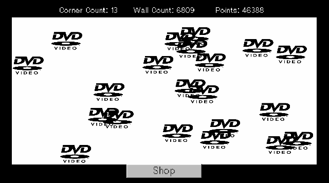

Idle DVD Screensaver
This project was just a fun little idea that popped into my head from the iconic dvd screensaver hitting the corner of the tv. The idea was that you start out with one dvd screensaver and you gain points every time it hits a wall. When the dvd screensaver hits a corner, it will spawn another one for even more corner hitting fun.

When you accumulate over 50 points (maybe changed in the future to more points) then the user can purchase another dvd screensaver that will bounce around the screen.
If the player reaches over 50 dvd screensavers on the screen, then they will be combined into a level 2 dvd screensaver. There are 10 dvd levels and each level requires 50 of the same level dvds to level up.
I was also going to add another shop where the player can purchase new backgrounds or different themed dvd screensavers with the in-game currency.